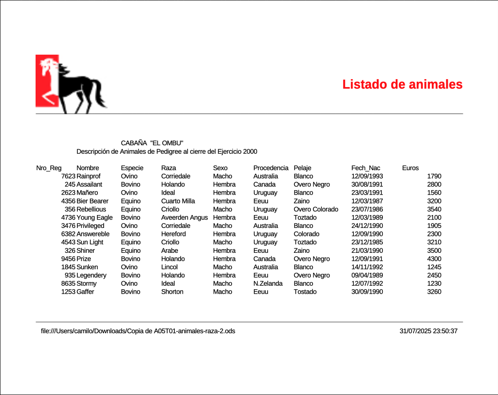
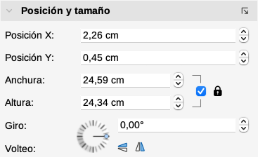
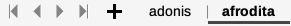

Guía 1112: Formato en LibreOffice Calc¶
|
|

Exploración Estructuración Actividad práctica Transferencia
Temática: Edición avanzada, herramientas de corrección y presentación visual de datos en LibreOffice Calc.
Objetivo de aprendizaje: Optimizar la calidad, legibilidad y presentación profesional de las hojas de cálculo mediante el uso efectivo de herramientas de revisión ortográfica, configuración de parámetros de impresión y la integración de elementos gráficos.
Componente: Uso y apropiación de la T&I.
Competencia: Genero propuestas innovadoras para el uso y aprovechamiento de productos tecnológicos.
Evidencia de aprendizaje: Utilizo adecuadamente herramientas informáticas para la búsqueda, organización, procesamiento, sistematización, comunicación y difusión de ideas.
Actividades desarrolladas en su totalidad.
Participación en clase.
Explicación clara de conceptos.
Argumentación de ideas.
Cumplimiento de las reglas del aula.
{kind=link}
{kind=link}
{kind=link}
Mensaje del autor¶
“Esta guía didáctica ha sido diseñada con el propósito de facilitar el aprendizaje práctico y efectivo del formato en LibreOffice Calc. A través de actividades claras y evidencias concretas, el estudiante desarrolla habilidades sólidas para aplicar formatos en hojas de cálculo, mejorando así su competencia digital y su capacidad para gestionar información de manera eficiente”.
—Camilo Fonseca
Revisión y auto-corrección¶
El objetivo principal de estas herramientas en LibreOffice Calc es garantizar la calidad y precisión del texto dentro de las hojas de cálculo. La funcionalidad de “Corrección automática” actúa como un asistente que detecta errores tipográficos o de formato comunes de manera inmediata, permitiendo que el usuario mantenga un flujo de trabajo constante sin tener que detenerse a corregir manualmente errores menores. Esto no solo mejora la eficiencia, sino que asegura que los documentos tengan un acabado profesional.
Paginación e impresión¶
El concepto central de la paginación e impresión radica en la configuración previa a la impresión, que permite controlar cómo se verán los datos en el papel. Esto implica:
Estilos de página: Permite definir la estructura general del documento.
Encabezados y pies de página: Elementos esenciales para incluir información contextual, como títulos de informes, numeración de páginas o fechas.
Bordes y fondos: Herramientas que ayudan a organizar visualmente los datos para que sean más legibles y estéticamente agradables al imprimirse.
Imágenes, objetos y dibujos¶
Para enriquecer la información numérica, LibreOffice Calc facilita la integración de elementos visuales. La teoría detrás de esto permite al usuario:
Inserción versátil: Es posible añadir imágenes tanto desde archivos externos (locales) como desde la galería integrada del programa, lo que permite ilustrar los datos con logos o gráficos relevantes.
Formato y manipulación: Una vez insertados, estos elementos (imágenes y objetos de dibujo) pueden ser editados en tamaño, posición y estilo, lo cual es crítico para convertir una simple tabla de datos en un informe visualmente impactante y fácil de interpretar para terceros.
A00: Introducción (5%)¶
Exploración
Transcriba en su cuaderno el objetivo, las orientaciones curriculares y los criterios de evaluación de la presente guía.
Lea el mensaje del autor y en su cuaderno responda:
¿Por qué es importante aplicar formato en una hoja de cálculo?
A01: Taller (5%)¶
Estructuración
En su cuaderno responda las siguientes preguntas:
¿Cómo contribuyen las herramientas de revisión y auto-corrección a mejorar la calidad y eficiencia en la elaboración de hojas de cálculo en LibreOffice Calc?
¿Qué aspectos se deben considerar al configurar la paginación e impresión para asegurar que un documento de Calc se presente de manera profesional y clara?
¿De qué manera la inserción y manipulación de imágenes, objetos y dibujos pueden transformar la presentación de datos numéricos en un informe?
¿Cuáles son las ventajas de utilizar encabezados y pies de página en un documento impreso desde LibreOffice Calc?
¿Cómo se podría aplicar las herramientas de formato para imágenes y objetos en un proyecto específico para mejorar la comprensión visual de los datos?
A02: Revisión y auto-corrección 101 (5%)¶
Actividad práctica
DESCARGUE el siguiente archivo y GUÁRDELO en la carpeta de evidencias del periodo actual:
G1112A02-herramientas-revision.ods Descargar
ABRA el archivo G1112A02-herramientas-revision.ods y en la hoja: Corrección ortográfica automática, seleccione cada una de las palabras con mala ortografía y PULSAR el botón derecho del mouse para generar el menú contextual. De dicho menú, seleccionar la palabra con la ortografía correcta.
En la hoja: Corrección ortográfica, vuelva a corregir las palabras con mala ortografía pero esta vez, usando la herramienta Ortografía ubicada en la barra de herramientas estándar.

Ventana corrección ortográfica¶
En la opción Idioma de texto, verificar que el idioma seleccionado sea: Español (Colombia)
Seleccionar las palabra correcta en la sección de Sugerencias y PULSAR el botón Corregir
En la hoja: División silábica, SELECCIONAR la celda: B3 y en su menú contextual SELECCIONAR la opción: Formato de celdas. Luego en la pestaña Alineación configurar lo siguiente:
Propiedades
MARCAR LA OPCIÓN: Silabación activa
PULSAR el botón Aceptar
En su cuaderno…
Describa que acabo de pasar con el texto de la celda B3.
En la celda: F3, realice el mismo procedimiento para activar la silabación activa.
En la hoja: Sinónimos, IDENTIFIQUE la celda: B2. ILUMINE la palabra Catástrofes y genere un menú contextual sobre la misma. De dicho menú contextual, SELECCIONAR la opción: sinónimos y de la lista ESCOGER: Desastre.

Ventana corrección ortográfica¶
En la hoja: Corrección automática, DESARROLLAR la instrucción del rango de celdas: B2:C3 la cual dice:
En la celda situada a la derecha, escriba lo que ve en la celda de la izquierda y PULSAR la tecla ENTER
Advertencia
SI DECIDE SIMPLEMENTE COPIAR y PEGAR, no funcionará correctamente.
En su cuaderno…
DESCRIBA que pasa con cada una de las celdas a medida que escribe el texto y TRANSCRIBA dicho texto.
GUARDE los cambios y CIERRE el software LibreOffice Calc.
A03: Paginación e impresión 303 (10%)¶
Actividad práctica
Descargue los siguientes archivos y guárdelos en su carpeta de evidencias:
ABRA el archivo: G1112A03-animales-raza-1.ods
En su cuaderno…
Observe el contenido del archivo G1112A03-animales-raza-1.ods y en su cuaderno describa de que trata.
En la barra de herramientas estándar, PULSAR el botón Alternar previsualización de impresión
Es necesario modificar el estilo por defecto. El estilo por defecto tiene el nombre: Predeterminado. En la barra de estado, PULSE CLIC en el nombre Predeterminado.
Estilo predeterminado¶
Se abrirá la ventana: Estilo de página: Predeterminado. Configure las siguientes opciones:
Pestaña Página:
Formato de papel:
Orientación: Horizontal
Márgenes:
Izquierda: 2,00 cm
Derecha: 2,00 cm
Arriba: 3,00 cm
Abajo: 3,00 cm
Configuración de disposición:
Alineación de la tabla: Vertical
Pulsar el botón Aceptar
VERIFIQUE que la hoja de cálculo tenga la siguiente apariencia:

Hoja horizontal¶
GUARDE los cambios y CIERRE el software LibreOffice Calc.
ABRA el archivo G1112A03-animales-raza-2.ods
En la barra de herramientas estándar, PULSAR el botón Alternar previsualización de impresión
Es necesario configurar una cabecera, para esto abra la ventana: Estilo de página: Predeterminado y configure las siguientes opciones:
En la pestaña cabecera:
Cabecera:
Altura: 3,20 cm
PULSAR el botón Más… para abrir la venta: Bordes y fondo
Bordes
Disposición de líneas
Definido por el usuario: Borde inferior
Línea:
Estilo: Sólido
Color: Gris oscuro 2
Grosor: Muy fino (0,5 pt)
Fondo
Imagen
Imagen
Añadir/importar: (seleccionar la imagen logo-equino.png)
Opciones
Estilo: Posición y tamaño personalizados
Posición: Arriba a la izquierda
Pulsar Aceptar
PULSAR el botón Editar… para abrir la ventana: Cabeceras (Estilo de página: Predeterminado)
Cabecera (primera)
Área derecha: Escribir el texto: Listado de animales Y SELECCIONARLO!!!
Cabecera personalizada: PULSAR el botón: Atributos de texto para abrir la ventana: Atributos de texto
Tipo de letra
Estilo: Negrita
Tamaño: 20 pt
Efectos tipográficos
Color de letra
Color de letra: Rojo
Pulsar el botón Aceptar
En la pestaña Pie de página:
Pie:
PULSAR el botón Más… para abrir la venta: Bordes y fondo
Bordes
Disposición de líneas
Definido por el usuario: Borde superior
Línea
Estilo: Sólido
Color: Gris oscuro 2
Grosor: Muy fino (0,5 pt)
Separación:
Izquierda, Derecha, Superior, Inferior: 0,30 cm
Pulsar el botón Aceptar
PULSAR el botón Editar… para abrir la ventana: Pie (Estilo de página: Predeterminado)
Área izquierda: Colocar el cursor en el área izquierda.
Pie de página personalizado: Seleccionar el ícono de título y luego seleccionar: Ruta/Nombre del archivo
Área central: Eliminar el número de página
Área derecha: Colocar el cursor en el área derecha
Pie de página personalizado: PULSAR el icono de Fecha y luego PULSAR el icono de Hora
PULSAR el botón ACEPTAR
PULSAR el botón ACEPTAR
PULSAR el botón ACEPTAR
VERIFIQUE que la hoja de cálculo tenga la siguiente apariencia:

Aspecto final¶
Guarde los cambios y cierre el software LibreOffice Calc.
ABRA el archivo G1112A03-animales-raza-3.ods
En la barra de herramientas estándar, PULSAR el botón Alternar previsualización de impresión.
Es necesario configurar los bordes y fondo, para esto abra la ventana: Estilo de página: Predeterminado y configure las siguientes opciones:
En la pestaña Bordes
Disposición de líneas
Preconfigs: Bordes superior e inferior solo
Línea
Estilo: Sólido
Color: Gris oscuro 1
Separación
Izquierda, derecha, superior, inferior: 0,20 cm
En la pestaña Fondo
Color
Colores: Gris claro 4
Pulsar el botón Aceptar
En la barra de herramientas estándar, PULSAR el botón Alternar previsualización de impresión para volver a la vista normal de trabajo.
En la barra del menú superior, PULSAR ver > salto de página
En su cuaderno…
Describa que acaba de pasar con la hoja del archivo.
SELECCIONE el rango de celdas: A23:I23 y arrastre hasta la fila 46. De nuevo PULSAR el botón de Alternar previsualización de impresión
En su cuaderno…
Describa que acaba de pasar con el número de hojas.
GUARDE los cambios y CIERRE el software LibreOffice Calc.
{kind=link}
{kind=link}
{kind=link}
{kind=link}
A04: Formato de imágenes 202 (10%)¶
Actividad práctica
Descargue los siguientes archivos y guárdelos en su carpeta de evidencias:
CREE un archivo en LibreOffice Calc de nombre: G1112A04-imagenes.ods
SELECCIONE la celda B2 luego en el menú superior, PULSAR el botón Insertar > Imagen… En la ventana de búsqueda, seleccione la imagen adonis.png de su carpeta de evidencias. Luego PULSAR el botón Abrir
La imagen debe estar insertada en la hoja de cálculo. SELECCIONE la imagen y en el menú de la barra de herramientas lateral, seleccionar Propiedades.
En el menú de Propiedades, IDENTIFIQUE la sección Posición y tamaño. Marque el ícono del candado. Configure las siguientes opciones:
Posición y tamaño
Altura: 6,83 cm. PULSE la tecla ENTER

Aspecto final¶
En la parte inferior de la interfaz de LibreOffice Calc, PULSE el botón + para crear otra hoja de cálculo. Para cambiar los nombres de las hojas, PULSE el botón derecho del mouse sobre la pestaña de la hoja para generar un menú contextual y SELECCIONAR la opción: Cambiar nombre de hoja.
La Hoja1 nómbrela: adonis
La Hoja2 nómbrela: afrodita

Aspecto final¶
En la hoja de nombre afrodita, en la celda B2, inserte la imagen afrodita.jpg de su carpeta de evidencias.
SELECCIONE la imagen y manteniendo sus proporciones (marcar el ícono del candado), configure una altura de: 8,58 cm
En su cuaderno…
Escriba el procedimiento para insertar imágenes y cambiar su tamaño en LibreOffice Calc.
GUARDE los cambios y CIERRE el software LibreOffice Calc.
Abra el archivo G1112A04-imagenes-2.ods y en la hoja de adonis, SELECCIONE la imagen que está en el rango de celdas: B2:D16. OBSERVE que la barra de herramientas de formato, los iconos cambiaron.
En su cuaderno…
Dibuje y escriba el nombre de los iconos que cambiaron. (Para ver el nombre de los iconos, SITUAR el cursor sobre el icono y este mostrará el nombre).
En la hoja adonis, cree 3 copias de la imagen que está posicionada en el rango de celdas: B2:D16. Dichas copias realizarlas en las celdas E2, B17 y E17.
A todas las copias, en la barra de herramientas lateral configurar lo siguiente:
Propiedades
Imagen
Modo de color: Escala de grises
Brillo: 30%
Contraste: 40%
En la barra de herramientas de formato, PULSAR el botón Color.
Las imágenes en la hoja adonis, deberían tener la siguiente apariencia:
GUARDE los cambios hasta el momento.
ABRA la hoja afrodita
SELECCIONE la imagen que está en el rango de celdas: B2:H20. En la barra de herramientas formato, configure las siguientes opciones:
Estilo de línea: continuo
Grosor de línea: 0,20 cm
Color de línea: Rojo
Filtro: Dibujo al carboncillo
En la barra de herramientas formato, PULSE el botón derecho del mouse sobre el icono sombra para abrir el menú contextual y SELECCIONE la opción Área.
En la ventana de Área, configurar las siguientes opciones:
Sombra
Propiedades
Color: Verde oscuro 1
Distancia: 0,60 cm
Desenfoque: 25 pt
PULSAR el botón Aceptar
La imagen debería tener el siguiente aspecto:
GUARDE los cambios y CIERRE el software LibreOffice Calc.
{kind=link}
{kind=link}
{kind=link}
{kind=link}
{kind=link}
{kind=link}
{kind=link}
A05: Objetos gráficos 201 (15%)¶
Actividad práctica
Descargue el siguiente archivo en su carpeta de evidencias:
G1112A05-graficos.ods Descargar
CREE un archivo en LibreOffice Calc de nombre: G1112A05-galeria.ods
En la barra de herramientas lateral, PULSE el botón Galería.
Dentro del menú de la Galería se encuentran varios temas.
En su cuaderno…
En su cuaderno escriba el nombre de todos los temas (ejemplo: Bolos, BPMN, Diagramas de flujo, etc.)
SELECCIONE el tema Iconos. Luego SELECCIONE la celda A1. Dentro de todas las imágenes, seleccione la imagen de nombre: status-ok. Luego sobre la imagen, PULSE el botón derecho del mouse para generar un menú contextual y en este SELECCIONAR la opción: Insertar
En las propiedades de la imagen, establezca una Altura de 3cm
Al igual que la imagen status-ok, inserte las imágenes:
status-warning en la celda C9
status-info en la celda A9
status-error en la celda C1
Todas las imágenes establecer una altura de 3 cm. Al final debería quedar así:
GUARDE los cambios y CIERRE el software LibreOffice Calc.
ABRA el archivo A06T04-graficos.ods y VERIFIQUE que está en la hoja graficos.
En la barra de herramientas lateral, PULSE la opción Galería y luego el tema iconos. Descienda en los gráficos del tema iconos hasta encontrar los círculos: colored-shapes-green, colored-shapes-yellow, colored-shapes-red y colored-shapes-blue.
Los 6 círculos posicionarlos de la siguiente manera:
Círculo verdes en la celda A1.
Círculo amarillo en la celda D1.
Círculo rojo en la celda A8.
Círculo azul en la celda D8.
Círculo gris en la celda A15.
Círculo blanco en la celda D15.
Cada círculo debe tener una altura de 3cm.
USANDO las opciones de: Traer al frente, Hacia adelante, Hacia atrás, Enviar al fondo, En primer plano y al fondo, ubicadas en la barra de herramientas formato:
Configure los círculos de tal forma que queden como la siguiente imagen (recomendación: La opción: Al fondo, es para el final):
Advertencia
Si hay problemas, no olvide que puede PULSAR: CTRL + Z para deshacer cambios.
En la barra de herramientas lateral, PULSE el botón Navegador. Es un inventario de todos los elementos en la hoja de cálculo. En este inventario, dentro de Imágenes, IDENTIFIQUE los elementos correspondientes a los círculos.
Para seleccionar un elemento, PULSE doble clic sobre cada elemento que pertenezca a un círculo, luego en la barra de herramientas formato, PULSAR el botón En primer plano. Esto hará que los círculos vuelvan a estar al frente de la hoja de cálculo.
GUARDE los cambios hasta el momento.
ABRA la hoja dibujos.
USANDO las herramientas vistas hasta el momento, cree el siguiente dibujo:
RECOMENDACIONES
El texto ofimática y los círculos se encuentran en la barra de herramientas de dibujo. Para activarla PULSAR: Menú superior > Ver > Barras de herramientas > Dibujo
Para texto ofimática, usar la opción de Insertar texto de Fontwork presente en la barra de herramientas de dibujo.
El celular y la pantalla los encuentra en la Galería de la barra de herramientas lateral.
Las opciones de transparencia, sombra, etc. se encuentran la opción de Propiedades de la barra lateral derecha.
GUARDE los cambios y CIERRE el software LibreOffice Calc.
{kind=link}
{kind=link}
{kind=link}
{kind=link}
{kind=link}
{kind=link}
{kind=link}
{kind=link}
A06: Presentación de evidencias (50%)¶
Transferencia
¿Cómo se evalúa?
Los estudiantes presentan lo siguiente:
Carpeta de evidencias con todos los archivos editados en la presente guía. (Los archivos deben estar abiertos).
Cuaderno con las actividades desarrolladas.
El docente realiza unas preguntas para verificación de conocimientos.
El estudiante debe demostrar de forma práctica sus conocimientos en el uso de LibreOffice Calc.